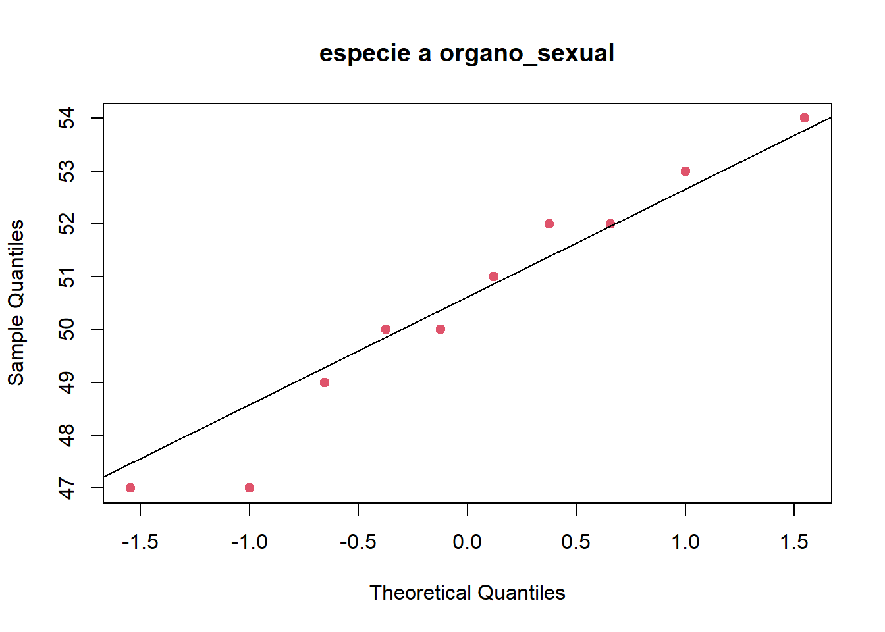

input <- ("
especie pata abdomen organo_sexual
a 191 131 53
a 185 134 50
a 200 137 52
a 173 127 50
a 171 128 49
a 160 118 47
a 188 134 54
a 186 129 51
a 174 131 52
a 163 115 47
b 186 107 49
b 211 122 49
b 201 144 47
b 242 131 54
b 184 108 43
b 211 118 51
b 217 122 49
b 223 127 51
b 208 125 50
b 199 124 46
")Análisis Discriminante
R
Multivariado
El Análisis Discriminante (AD),es una técnica de predicción en la pertenencia a un grupo (variable dependiente) a partir de un conjunto de predictores (variables independientes). El objetivo del AD es entender las diferencias de los grupos y predecir la verosimilitud de que una persona o un objeto pertenezca a una clase o grupo basándose en los valores que toma en los predictores.
Existen dos enfoques en la clasificación discriminante:
El basado en la obtención de funciones discriminantes de cálculo similar a las ecuaciones de regresión lineal múltiple.
Empleando técnicas de correlación canónica y de componentes principales, denominado análisis discriminante canónico.
El primer enfoque esta basado en conseguir, a partir de las variables explicativas, unas funciones lineales de éstas con la capacidad de clasificar a otros individuos, donde la función de mayor valor define el grupo al que pertenece de la forma más probable.
El AD solo admite variables cuantitativas como regresoras, por lo que si alguna de las variables independientes es categórica, hay que utilizar otros métodos alternativos de clasificación.
Revisar también: https://rpubs.com/JairoAyala/CAD.
Análisis Discriminante Lineal
El análisis discriminante lineal (LDA) es un método de clasificación de aprendizaje automático supervisado (binario o multimonial) y un método de reducción de dimensiones. EL LDA encuentra combinaciones lineales de variables que mejor discriminan las clases de la variable respuesta.
Un enfoque supone que las variables predictoras son variables aleatorias continuas normalmente distribuidas y con la misma varianza. Para que se cumpla esta condición, se deberá escalar los datos.
Para una variable respuesta de k niveles, LDA produce k−1 (reglas) discriminantes utilizando el teorema de Bayes.
\[Pr[Y=C_l|X]=\frac{P[Y=C_l]P[X|Y=C_l]}{\sum}\]
Donde Y es la variable respuesta, X son los predictores y \(C_l\) es la clase \(l-ésima\). Entonces, la probablidad de que \(Y\) sea igual al nivel \(C_l\) dados los predictores \(X\) es igual a la probabilidad a priori de \(Y\) multiplicado por la probabilidad de observar \(X\) si \(Y=C_l\) dividido por la suma de todas las probabilidades de \(X\) data las priors. El valor predicho para cualquier \(X\) es simplemente \(C_l\) que tenga la probabilidad máxima.
Una forma de calcular las probabilidades es asumir que \(X\) tiene una distribución normal multivariante con medias \(\mu_l\) y varianza común \(\sum\) . Entonces la función discriminante lineal para el grupo \(l\) es:
\[X´{\sum}^{-1}\mu_l-0.5{\mu}´_l{\sum}^{-1}\mu_l+log(Pr[Y=C_l])\]
La media teórica y la matriz de covarianza se estiman mediante la media muestral \(\mu=\bar{x_l}\) y la covarianza \(\sum=S\), y los predictores \(X\) se reemplazan con los predictores de muestra que denotamos \(\mu\).
Ejemplo Aplicativo
Un equipo de biólogos quiere generar un modelo estadístico que permita identificar a que especie (a o b) pertenece un determinado insecto. Para ello se han medido tres variables (longitud de las patas, diámetro del abdomen y diámetro del órgano sexual) en 10 individuos de cada una de las dos especies.
Obtención de los datos de entrenamiento
datos <- read.table(textConnection(input), header = TRUE)
datos$especie <- as.factor(datos$especie)Exploración gráfica de los datos
library(ggplot2)
library(ggpubr)
p1 <- ggplot(data = datos, aes(x = pata, fill = especie)) + geom_histogram(position = "identity", alpha = 0.5)
p2 <- ggplot(data = datos, aes(x = abdomen, fill = especie)) + geom_histogram(position = "identity", alpha = 0.5)
p3 <- ggplot(data = datos, aes(x = organo_sexual, fill = especie)) + geom_histogram(position = "identity", alpha = 0.5)
ggarrange(p1, p2, p3, nrow = 3, common.legend = TRUE)A nivel individual, la longitud de la pata parece ser la variable que más diferencia a las especies a y b.
Correlación entre variables
pairs(x = datos[, c("pata","abdomen","organo_sexual")],
col = c("firebrick", "green3")[datos$especie], pch = 19)Los pares de variables abdomen-pata y pata-organo_sexual presentan caracteristicas que evidencian una diferenciación entre las especies a y b.
Gráfico tridimensional
library(scatterplot3d)
scatterplot3d(datos$pata, datos$abdomen, datos$organo_sexual,
color = c("firebrick", "green3")[datos$especie], pch = 19,
grid = TRUE, xlab = "pata", ylab = "abdomen",
zlab = "organo sexual", angle = 65, cex.axis = 0.6)
legend("topleft",
bty = "n", cex = 0.8,
title = "Especie",
c("a", "b"), fill = c("firebrick", "green3"))La representación de las tres variables simultáneamente, nos indican que las dos especies están bastante separadas en un espacio 3D generado para su representación.
Prior probabilities
Como no se dispone de información acerca de la abundancia relativa de las especies a y b, a nivel poblacional, se considera como probabilidad previa de cada especie el número de observaciones de la especie entre el número de observaciones totales; teniendose:
\[\hat{\pi_a}=\hat{\pi_b}=10/20=0.5 \longrightarrow 50\% \]
# Representación de cuantiles normales de cada variable para cada especie
for (k in 2:4) {
j0 <- names(datos)[k]
x0 <- seq(min(datos[, k]), max(datos[, k]), le = 50)
for (i in 1:2) {
i0 <- levels(datos$especie)[i]
x <- datos[datos$especie == i0, j0]
qqnorm(x, main = paste("especie", i0, j0), pch = 19, col = i + 1)
qqline(x)
}
}
# Contraste de normalidad Shapiro-Wilk para cada variable en cada especie
library(reshape2)
library(knitr)
library(dplyr)
Attaching package: 'dplyr'The following objects are masked from 'package:stats':
filter, lagThe following objects are masked from 'package:base':
intersect, setdiff, setequal, unionlibrary(magrittr)
datos_tidy <- melt(datos, value.name = "valor")Using especie as id variableskable(datos_tidy %>% group_by(especie, variable) %>% summarise(p_value_Shapiro.test = shapiro.test(valor)$p.value))`summarise()` has grouped output by 'especie'. You can override using the
`.groups` argument.| especie | variable | p_value_Shapiro.test |
|---|---|---|
| a | pata | 0.7763034 |
| a | abdomen | 0.1845349 |
| a | organo_sexual | 0.6430844 |
| b | pata | 0.7985711 |
| b | abdomen | 0.5538213 |
| b | organo_sexual | 0.8217855 |
No hay evidencias de falta de normalidad univariante en de las variables.